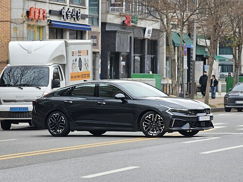
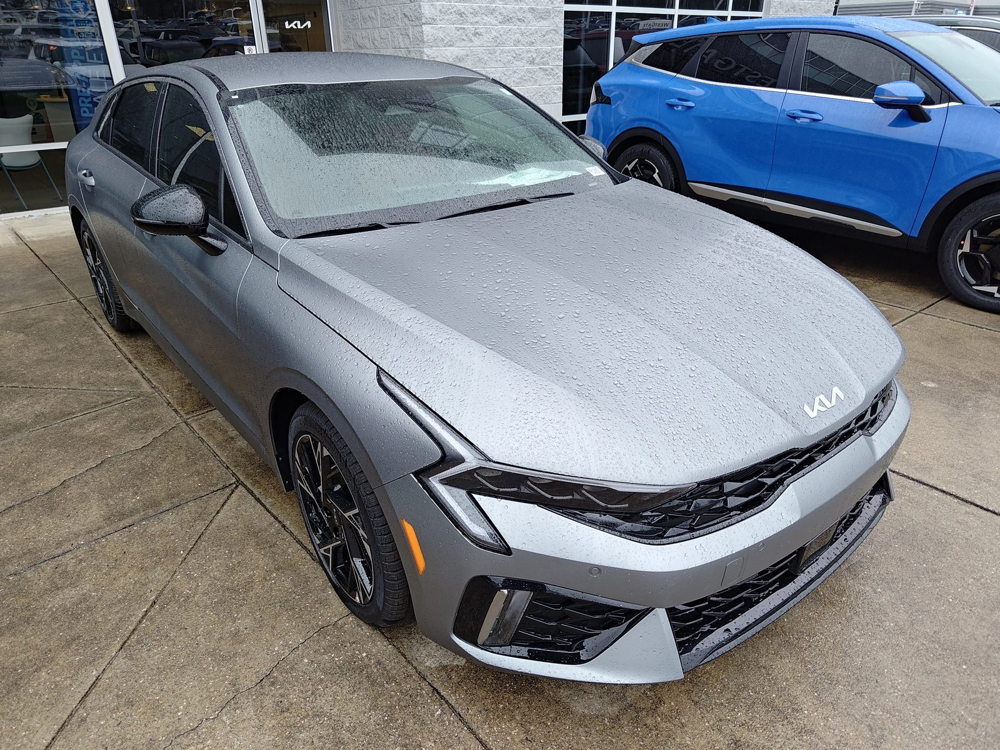
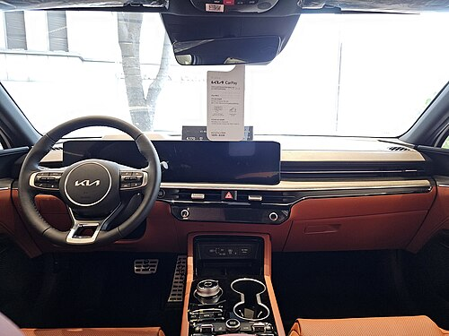
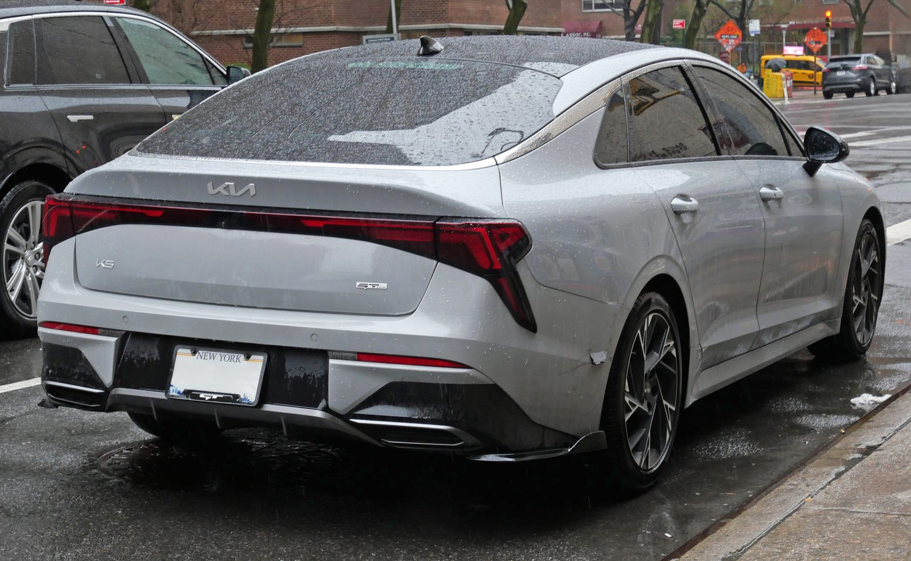

▲ 상품성을 강화해 돌아온 기아 K5 연식변경 모델 ⓒ Damian B Oh, Wikimedia Commons (CC BY-SA 4.0)
기아가 지난 7월 2일 중형 세단 K5의 연식변경 모델 'The 2026 K5'를 출시하고 본격적인 판매에 돌입했습니다. 3세대(DL3) 완전변경 이후 몇 차례 페이스리프트를 거친 K5는, 이번에는 외관 대신 편의·안전 사양과 옵션 구성에 집중한 상품성 강화형 연식변경으로 돌아왔습니다.
가격은 2.0 가솔린 스마트 셀렉션 기준 2,763만 원부터 책정됐습니다(매체에 따라 개별소비세 적용 시점 기준으로 2,724만 원부터로 보도되기도 했습니다). 여기에 2.0 LPG 렌터카 모델은 2,517만 원부터, 최상위 2.0 하이브리드 시그니처는 3,964만 원까지 폭넓은 라인업을 갖췄습니다. 정식 출시 이후 공개된 국내외 리뷰와 시승 영상을 종합해, 무엇이 달라졌는지 정리해 드립니다.
1. 가격 & 트림 구성 — '베스트 셀렉션'이 신설됐다
이번 연식변경의 가장 큰 변화는 베스트 셀렉션 트림의 신설입니다. 기존에는 프레스티지 트림에서 옵션으로만 선택할 수 있던 드라이브 와이즈(전방 충돌방지 보조, 후측방 충돌방지 보조, 후방 교차 충돌방지 보조, 스마트 크루즈 컨트롤 정차&재출발, 안전 하차 보조, 내비게이션 기반 스마트 크루즈 컨트롤, 고속도로 주행 보조 등)를 베스트 셀렉션부터 기본으로 넣어, 가격 부담을 낮추면서도 상위 트림급 안전 사양을 누릴 수 있게 했습니다.
개별소비세 3.5% 기준 트림별 가격은 2.0 가솔린이 스마트 셀렉션 2,724만~2,763만 원, 프레스티지 2,808만 원, 베스트 셀렉션 2,928만 원, 노블레스 3,154만 원, 시그니처 3,469만 원 순입니다. 1.6 가솔린 터보는 프레스티지 2,887만 원부터 시그니처 3,546만 원까지, 2.0 하이브리드는 프레스티지 3,241만 원부터 시그니처 3,868만 원까지 형성돼 있습니다. 잔가보장 유예형 할부를 활용하면 2.0 가솔린 스마트 셀렉션을 월 약 15만 원 수준의 납입금으로 운용할 수 있다는 점도 눈에 띕니다.
2. 달라진 상품성 — 편의·안전 사양 대폭 기본화

▲ 프로젝션 LED 헤드램프와 번개 형태 DRL이 강조된 K5 전면부 ⓒ SGHFan, Wikimedia Commons (CC0)
모든 트림에 100W C타입 USB 충전 단자와 케이블이 기본 적용돼 고속 충전 편의성이 한층 좋아졌습니다. 베스트 셀렉션 트림부터는 12.3인치 슈퍼비전 클러스터와 파노라믹 커브드 디스플레이가 기본 사양으로 들어가고, 프로젝션 LED 헤드램프와 LED 리어 콤비네이션램프도 기본화되어 디자인 완성도를 높였습니다.
실내 편의성도 크게 개선됐습니다. 스웨이드 헤드라이닝이 적용돼 상위 트림 못지않은 고급스러운 분위기를 연출하고, 운전석·동승석 파워시트와 동승석 릴렉션 컴포트 시트, 워크인 디바이스까지 기본으로 제공됩니다. 국내 리뷰어들은 "옵션 구성이 소비자 관점에서 한결 간소화됐고, 트림 간 사양 격차를 줄이면서도 선택의 폭은 오히려 넓어졌다"고 평가하고 있습니다.
3. 디자인 변화 — 그릴·범퍼 디테일과 ccNC 인포테인먼트

▲ ccNC 플랫폼 기반 파노라믹 커브드 디스플레이와 다이얼 타입 전자식 변속기(SBW)를 적용한 K5 실내 ⓒ Damian B Oh, Wikimedia Commons (CC BY-SA 4.0)
완전변경이 아닌 만큼 기본 실루엣은 유지하되, 디테일에서 상당한 변화를 줬습니다. 번개 형태로 이어지는 DRL과 좌우로 길게 뻗은 에어 인테이크가 스포티한 인상을 강조하고, 라디에이터 그릴 패턴과 전면 범퍼 하단 인테이크, 전후면 버티컬 윙, 스키드 플레이트, 머플러 팁 디자인까지 새롭게 다듬었습니다.
실내는 기아의 최신 ccNC(Connected car Navigation Cockpit) 플랫폼을 기반으로 작동하며, 내비게이션과 차량 기능을 직관적으로 제어할 수 있습니다. 대부분의 트림에 다이얼 타입 전자식 변속기(SBW)가 적용되고, 주행 모드에 따라 색상이 바뀌는 앰비언트 라이트는 노블레스 트림 이상부터 제공됩니다.
4. 국내외 리뷰 종합 — 시승 반응은?

▲ 얇고 날카로운 그래픽으로 다듬어진 K5의 리어 콤비네이션램프 ⓒ Kevauto, Wikimedia Commons (CC BY-SA 4.0)
출시 직후 국내 자동차 유튜브 채널에서는 K5의 디자인, 성능, 신규 편의 사양을 다룬 리뷰 영상이 잇따라 올라오고 있습니다. 아래 영상에서는 상품성 강화 포인트와 실제 시승 소감을 확인할 수 있습니다.
▲ "2026 기아 K5 솔직 리뷰 디자인 성능 첨단 기술까지 완벽 분석" ⓒ YouTube
해외에서도 반응은 나쁘지 않습니다. 북미 자동차 매체들의 K5 GT-Line·LXS 시승기에서는 "동급 대비 세련된 디자인과 넉넉한 기본 사양, 합리적인 가격표를 갖춘 중형 세단"이라는 평가가 꾸준히 나오고 있습니다. 다만 해외 사양은 트림 구성과 엔진 라인업이 국내와 다를 수 있는 만큼, 실제 구매를 고려한다면 국내 사양 기준의 트림별 옵션표를 반드시 확인해야 합니다.
5. 종합 평가
이번 K5 연식변경은 화려한 외관 변화보다 "그동안 아쉬웠던 옵션 구성을 정비했다"는 데 방점이 찍힙니다. 특히 베스트 셀렉션 트림 신설로 상위 트림급 안전 사양을 합리적인 가격에 만날 수 있게 된 점은 실구매자 입장에서 반가운 변화입니다.
완전변경급 파격을 기대했다면 다소 아쉬울 수 있지만, "익숙한 디자인에 필요한 사양만 알차게 채운 실속형 중형 세단"을 찾는 소비자에게는 지금이 합리적인 구매 시점이 될 수 있습니다.